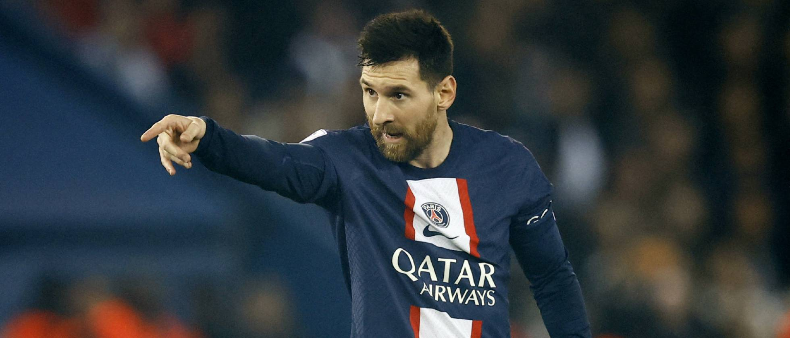

Mbappé amenaza revuelta en el PSG
El futbolista de Bondy ha puesto en duda su continuidad si Neymar sigue jugando en la capital parisina, según El País. No le gustan los actos de indisciplina del brasileño
La relación entre Mbappé, Neymar y el PSG se complica por momentos. El delantero francés ha condicionado su continuidad en la entidad parisina hasta 2025 a la salida del atacante brasileño, según El País. Mbappé habría insinuado que los actos de indisciplina de Ney afectan negativamente al club.En la información publicada por Diego Torres, se indica que la renovación de Neymar hasta 2027 fue una decepción tanto para el talento de Bondy como para su entorno y que el exjugador del Barça está plenamente convencido de que su compañero en el tridente que forma junto a Messi quiere que lo despidan.

Kylian Mbappé Lottin es un futbolista francés que juega como delantero en el Paris Saint-Germain F. C. de la Ligue 1.
Messi crea su propio fondo en Silicon Valley para invertir en deportes y tecnología
Se llamará Play Time y estará dirigido por Razmig Hovaghimian, socio de la empresa de capital de riesgo Graph Ventures
El futbolista argentino Lionel Messi ha anunciado que creará su propio fondo de inversión para "explorar oportunidades" en compañías de deportes, medios de comunicación y tecnología. Se llamará Play Time Sports-Tech Hold, según adelantó Bloomberg. Este será el vehículo inversor para los negocios del jugador. Además, ha elegido como sede la cuna de la innovación tecnológica, Silicon Valley."Estoy emocionado de extender nuestras raíces en Silicon Valley", asegura Messi en un comunicado. Y añade que "Play Time colaborará con emprendedores de todo el mundo".

Lionel Messi, la estrella argetina que juega en el equipo de la capital parisina.